Library
Approved application · approved logoEvery image below is an actual canonical PNG. Open an image for its full resolution. These are authored design scenes, not current-app browser captures.
Space before plans
page-populatedActions and implementation pointers
+ New page · Journal · Explore · All pages · ⌄ · Reflections · › · Reading · Explore this note · Ask Journl · Today’s Journal · Close · Instant · Thinking
apps/web/src/app/(app)/@appSidebar/_components/app-sidebar-pages.tsxapps/web/src/app/(app)/folders/_components/folder-nested-pages-list.tsxapps/web/src/app/(app)/pages/_components/page-editor.tsx

SHA256 6979237ddabb762453003ef2226cf9e3f43635714da676f36fe5a25928cbfb83

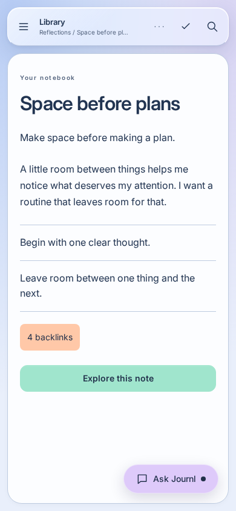
SHA256 0ecae01a935ac0db6eb0145c5ca9967170960a6c35b1086b930f043e3acecf75

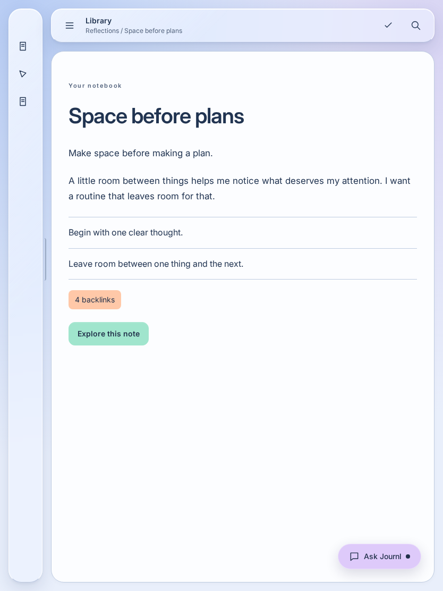
SHA256 4c8b28a54567344b88e9137c4c587f665ddd1bc54e93b53a119b843df48f7712

SHA256 a7eab391717b4a301f0e285c09986a640fd51fbdd9e6b37a7fb894647a8ad4cf

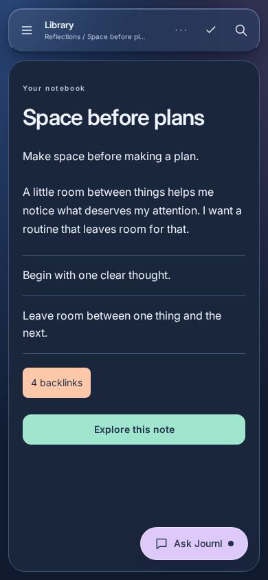
SHA256 6ec13be007252d3cda6242f4e4c944bfb05bb7d47dc6c648197feaf1314a977c

SHA256 fe3eeb19f00032ce1364ddc1fc58c4a4be14bb99d21e3c16f25958822b680775
Untitled page
page-blankActions and implementation pointers
+ New page · Journal · Explore · All pages · ⌄ · Reflections · › · Reading · Ask Journl · Today’s Journal · Close · Instant · Thinking
apps/web/src/app/(app)/@appSidebar/_components/app-sidebar-pages.tsxapps/web/src/app/(app)/folders/_components/folder-nested-pages-list.tsxapps/web/src/app/(app)/pages/_components/page-editor.tsx

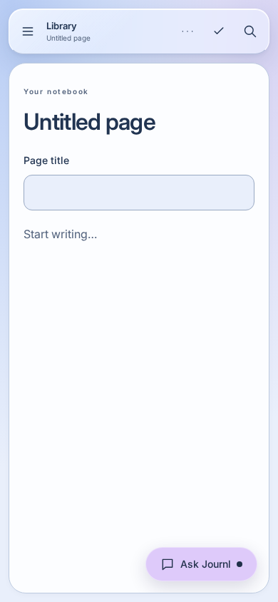
SHA256 8b90a61b54b7b2114105c69e1b3da5916ca97e006f455447824d16b2cb87d9b0

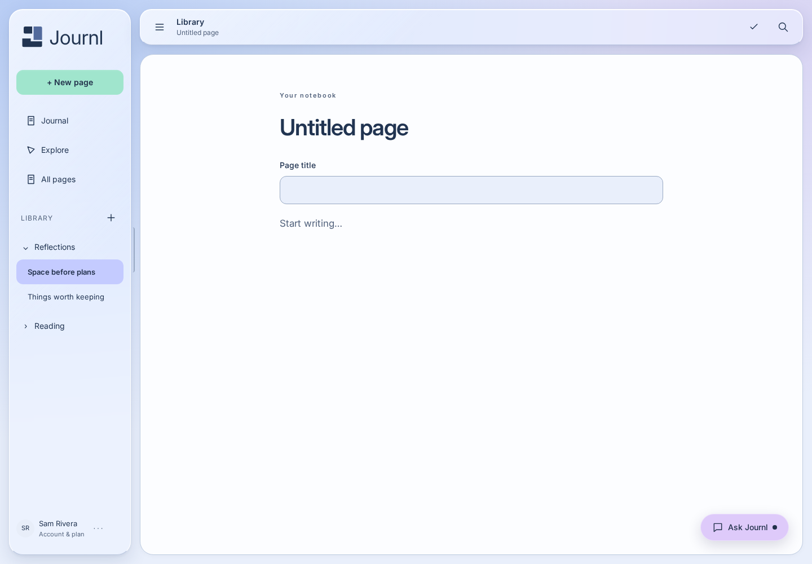
SHA256 eae047b09088b58c169a2318bd9ca1975ee873921eb6c792cb53d224df937d6d

SHA256 1e7b2d9a98a1bc0ef34d719855bf414d85937d19029fed841200a0ac2227a0ca

SHA256 033fd72c8ec51d6cf144ef339542387fb96bee1dfe3bafb8c7b54218b75973b8
All pages
all-pagesActions and implementation pointers
+ New page · Journal · Explore · All pages · ⌄ · Projects · › · Recipes · References · Folders · A small balcony garden · Lemon & herb lentils · Make room for focus · Ask Journl · Reflections · Reading · Today’s Journal · Close · Instant · Thinking
apps/web/src/app/(app)/@appSidebar/_components/app-sidebar-pages.tsxapps/web/src/app/(app)/folders/_components/folder-nested-pages-list.tsxapps/web/src/app/(app)/pages/_components/page-editor.tsx

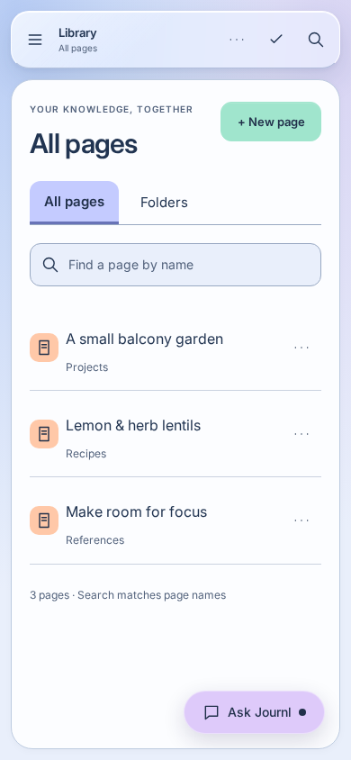
SHA256 635c41809bf5f47a7ea857b3f619abce084b8a2cc8ac9fb7a9cea49446466018

SHA256 d2325214908e3b10a36b8dd1368b0c953a087824c871d9774358e368db23dd91

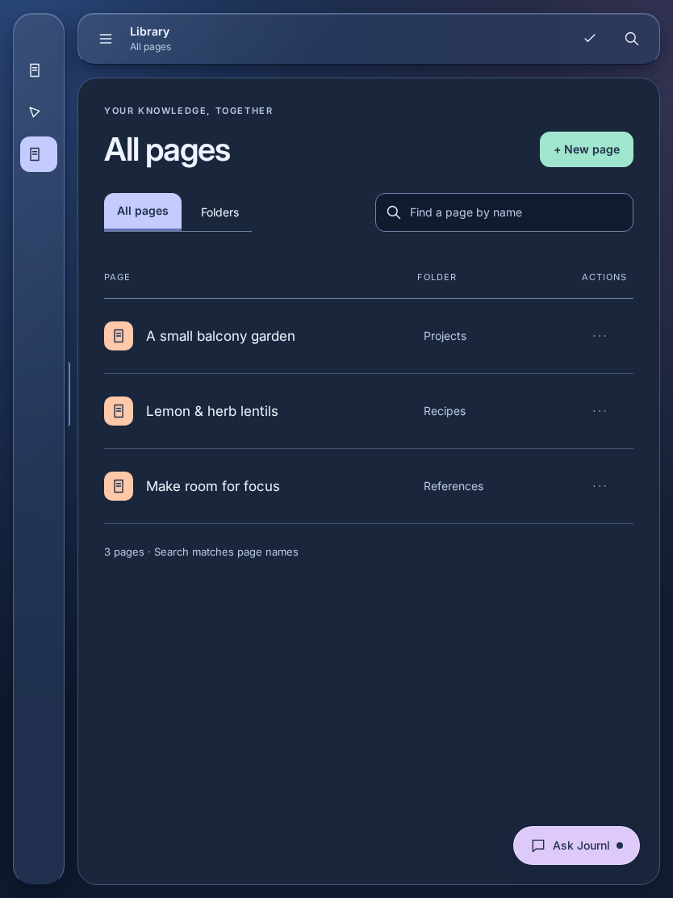
SHA256 c7197154683f47528982c85567d570d1ee2314da43b8fccf31f4dd6126fbe376

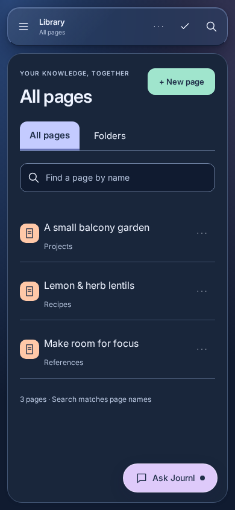
SHA256 5688618dbe0ff8f46741d0f77b22aa9e8e68e2e94eeae7e2de4403362c76b5ae

SHA256 7dfbda584a6668f2fe137b989e28e614c0431e503c14137c63d17036b991d469

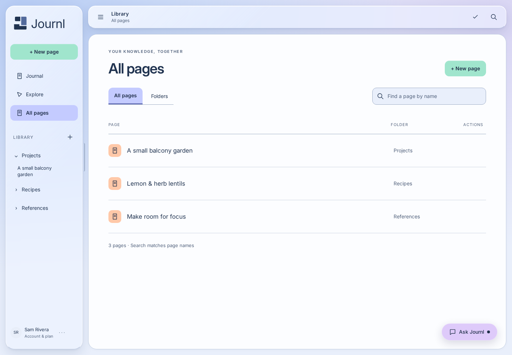
SHA256 ed05a44f89ded4fbbc385f009e52bb33214cf795c6909ef2ca8a0ddb1ae8bdb2
Reflections
folder-detailActions and implementation pointers
+ New page · Journal · Explore · All pages · ⌄ · Reflections · › · Reading · New folder · New page · Ask Journl · Today’s Journal · Close · Instant · Thinking
apps/web/src/app/(app)/@appSidebar/_components/app-sidebar-pages.tsxapps/web/src/app/(app)/folders/_components/folder-nested-pages-list.tsxapps/web/src/app/(app)/pages/_components/page-editor.tsx

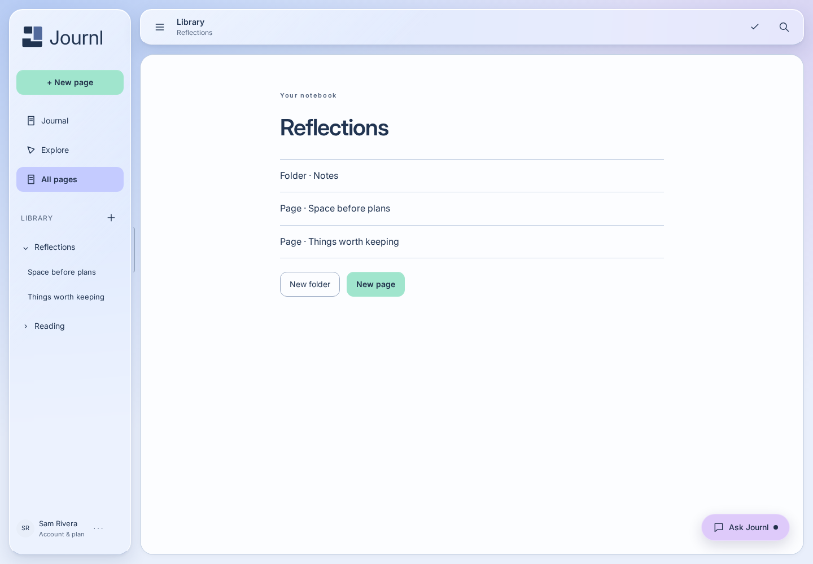
SHA256 bd547d6ffb9c43cfd1512de0843d8703e2dc00d442ee256bdeb6ee2ab5a4b936

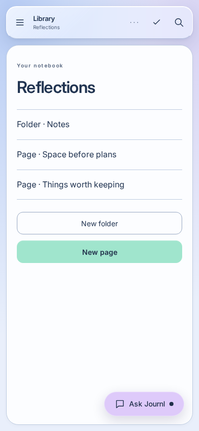
SHA256 78b505fe546e339624d06adc7cc9e3308c2f379346836c7596c2766b1ff4fb7c

SHA256 5f31fb95ef79696fbf527a317098f0bfcaea241800834d91698de001829b8e63

SHA256 043238b72216778d6df97100d45b07f675583f0ab1674d2b2c93e6dd4289b8b7
Your Library starts here
all-pages-emptyActions and implementation pointers
+ New page · Journal · Explore · All pages · ⌄ · Reflections · › · Reading · New page · Ask Journl · Today’s Journal · Close · Instant · Thinking
apps/web/src/app/(app)/@appSidebar/_components/app-sidebar-pages.tsxapps/web/src/app/(app)/folders/_components/folder-nested-pages-list.tsxapps/web/src/app/(app)/pages/_components/page-editor.tsx

SHA256 592ce25399ee6bd25b5a31f6738162c6e12176c88d9bd20417bfcdf415f3aa35

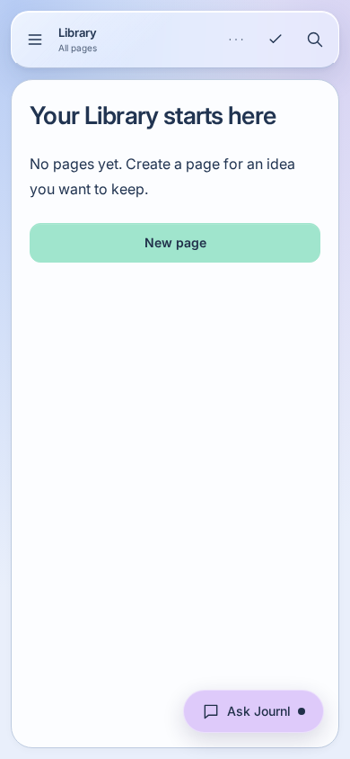
SHA256 0fed6c966f1b8e4252282ee9105413864bc3d38b59318606ad61a72a1d61e815

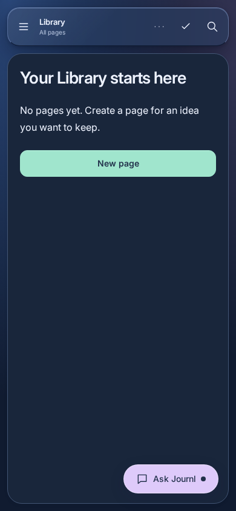
SHA256 e2e73a35f0cbcbc1189cf39abb1438b0731c28be65e086c154d04c2fd7337b7e

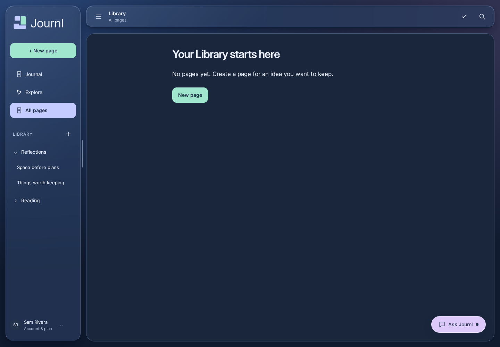
SHA256 f7ad254eb3c256e5681ea76d32fb4d67fa9d9fb38f97c296884563f7b1445a7e
Edit page title
page-title-editingActions and implementation pointers
+ New page · Journal · Explore · All pages · ⌄ · Reflections · › · Reading · Done · Ask Journl · Today’s Journal · Close · Instant · Thinking
apps/web/src/app/(app)/@appSidebar/_components/app-sidebar-pages.tsxapps/web/src/app/(app)/folders/_components/folder-nested-pages-list.tsxapps/web/src/app/(app)/pages/_components/page-editor.tsx

SHA256 06aa31430618b42883fdbb6810824efc23e8796ba58471d6008ec4a503ca4b33

SHA256 320b25c6a3966fed48348925a4ccbc7ceba90f6b68b7befd169392110dbc63fc

SHA256 2113c0d1fa5ca1332d7054e6caa2672ee720acdfba4bb20d004dcfce7f905c78

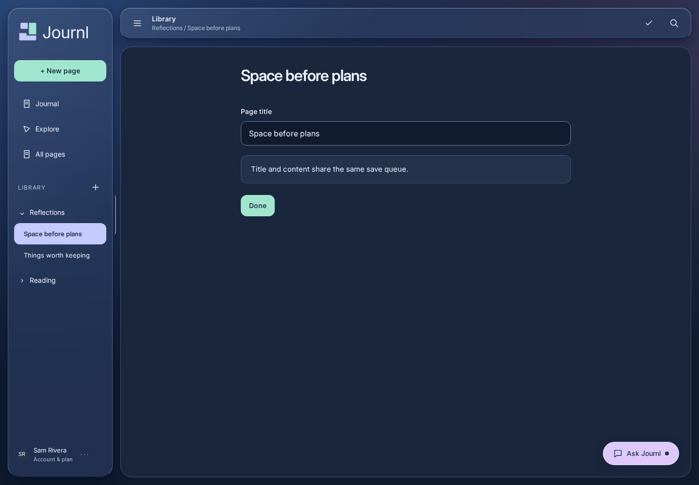
SHA256 cd91a4406d63959f1e94aa4b93dbb6677a783222e7aa8f3b261e9885acd85b5a
Page · loading
page-loadingActions and implementation pointers
+ New page · Journal · Explore · All pages · ⌄ · Reflections · › · Reading · Ask Journl · Today’s Journal · Close · Instant · Thinking
apps/web/src/app/(app)/@appSidebar/_components/app-sidebar-pages.tsxapps/web/src/app/(app)/folders/_components/folder-nested-pages-list.tsxapps/web/src/app/(app)/pages/_components/page-editor.tsx

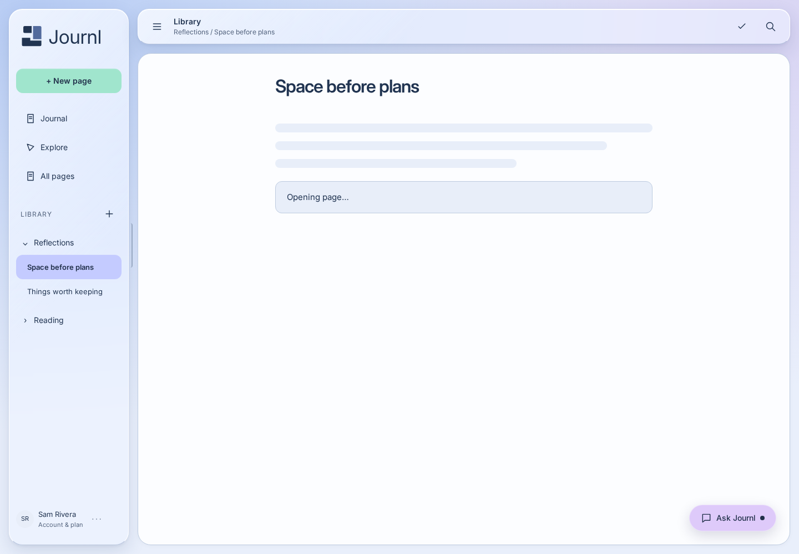
SHA256 e3623dc21293382a566c13ac00d59dbd6d83f3b665d18505fd5ccb11f9203be4

SHA256 9b91c4dc6b1106d6b4611154dbb5e8f03c0678be2ffe6d5f4ba93ab1661665cf

SHA256 79d2bf3f338a37461bf99dbf2166fe9b1366c6f4c8fc6937578ac9d14e634bc8

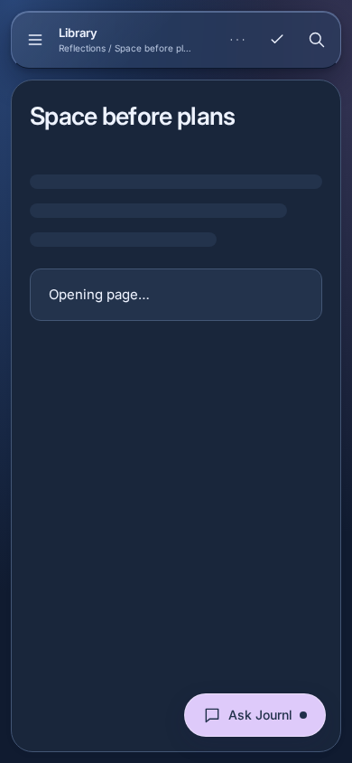
SHA256 f28c049f04f58568a8afd2955b582867055476429d520cadd88fd95f977ce15f
Page · error
page-errorActions and implementation pointers
+ New page · Journal · Explore · All pages · ⌄ · Reflections · › · Reading · Retry · Ask Journl · Today’s Journal · Close · Instant · Thinking
apps/web/src/app/(app)/@appSidebar/_components/app-sidebar-pages.tsxapps/web/src/app/(app)/folders/_components/folder-nested-pages-list.tsxapps/web/src/app/(app)/pages/_components/page-editor.tsx

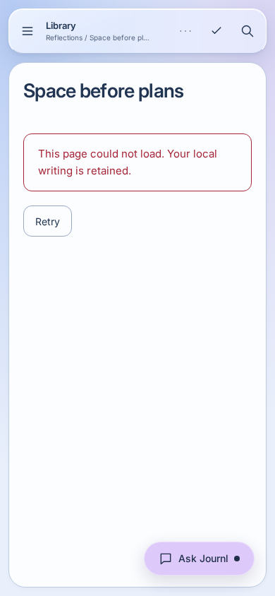
SHA256 b3c9d86f0fa21756de6bf58bbecacafb754f091e6eb9df63476271a8439d96e8

SHA256 a0009d8dbffc9efcde57ce66a29a1c05d8054015ee82e6902d91879cf24ae368

SHA256 3e28a69549eacfc975d14577ed61c47893ba9e6350d5a66d4638c99e17146c75

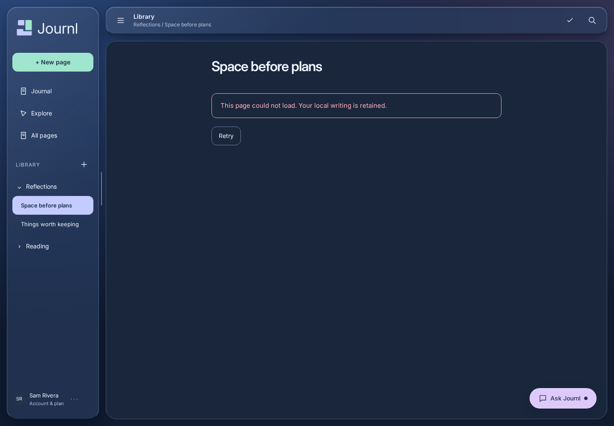
SHA256 03ee72a702c573b24271d62dbc5b08248c01f0c2ef07a54b58100ecf4210c10a
Page · unsupported
page-unsupportedActions and implementation pointers
+ New page · Journal · Explore · All pages · ⌄ · Reflections · › · Reading · Ask Journl · Today’s Journal · Close · Instant · Thinking
apps/web/src/app/(app)/@appSidebar/_components/app-sidebar-pages.tsxapps/web/src/app/(app)/folders/_components/folder-nested-pages-list.tsxapps/web/src/app/(app)/pages/_components/page-editor.tsx

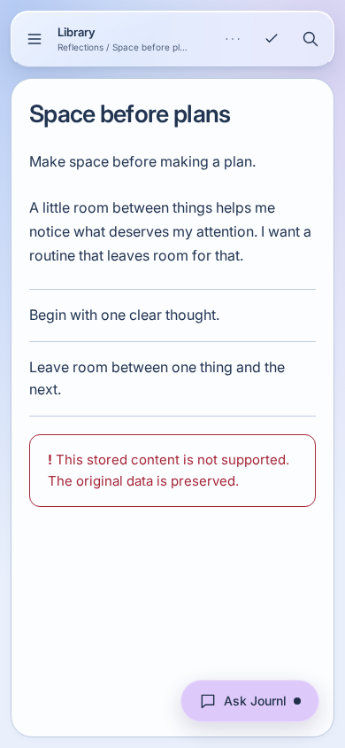
SHA256 fb98e07598134562ced27fa31c7caf96b4ce8c347b8a26ee77229e93d7cecf3a

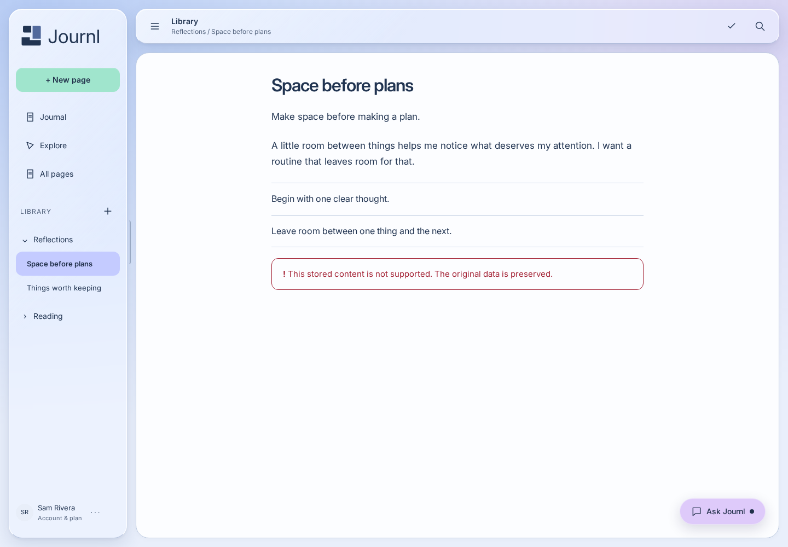
SHA256 3a0783174f9a36adcb85027129a18ca70b87d59773e09cca4cd19771e4d678f4

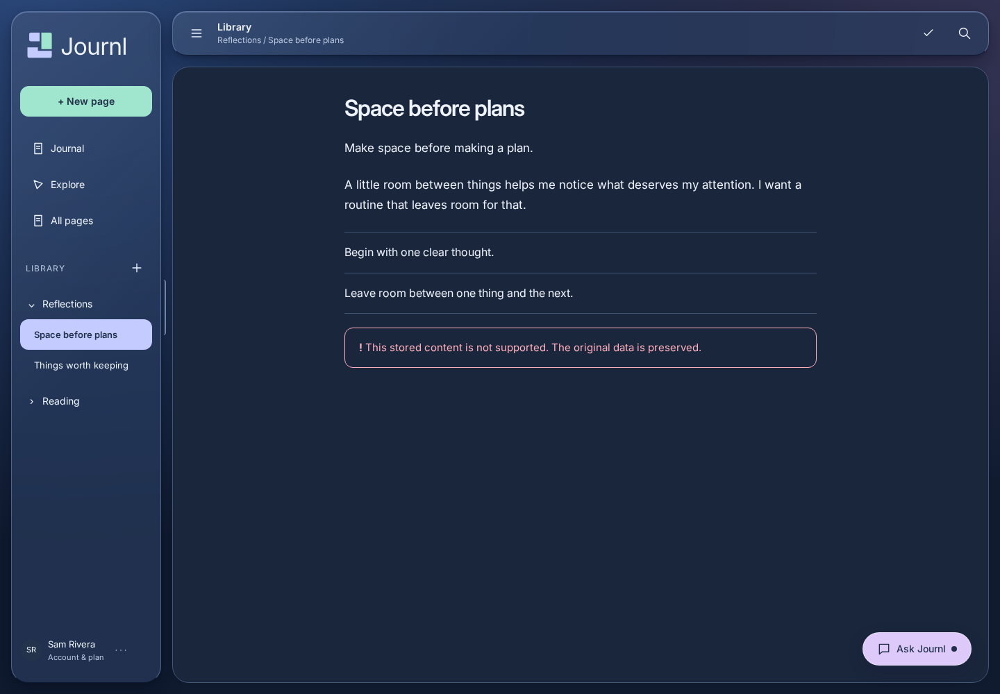
SHA256 8e8584ee0e84345da1f6bac2013e76d7740aa18ef18bde53137fe8e7d21d4def

SHA256 30760c3cba2fc32d97b1db70702d4be9a0df9c362d003f6dbd3e4d4261c9f17b
Page · read-only
page-read-onlyActions and implementation pointers
+ New page · Journal · Explore · All pages · ⌄ · Reflections · › · Reading · Ask Journl · Today’s Journal · Close · Instant · Thinking
apps/web/src/app/(app)/@appSidebar/_components/app-sidebar-pages.tsxapps/web/src/app/(app)/folders/_components/folder-nested-pages-list.tsxapps/web/src/app/(app)/pages/_components/page-editor.tsx

SHA256 3607cc93e8396477064ea86f94c620287431c0211db00751595dd7df9b837741

SHA256 1eeea07f0237fa1af584014e26c9c84ed5622fa9d2f3f92fcc37e2476f4e0e4b

SHA256 fb588af47911b8d8afab3818df720cfa911281ecc896ba5060cb67fc7cd5d4b8

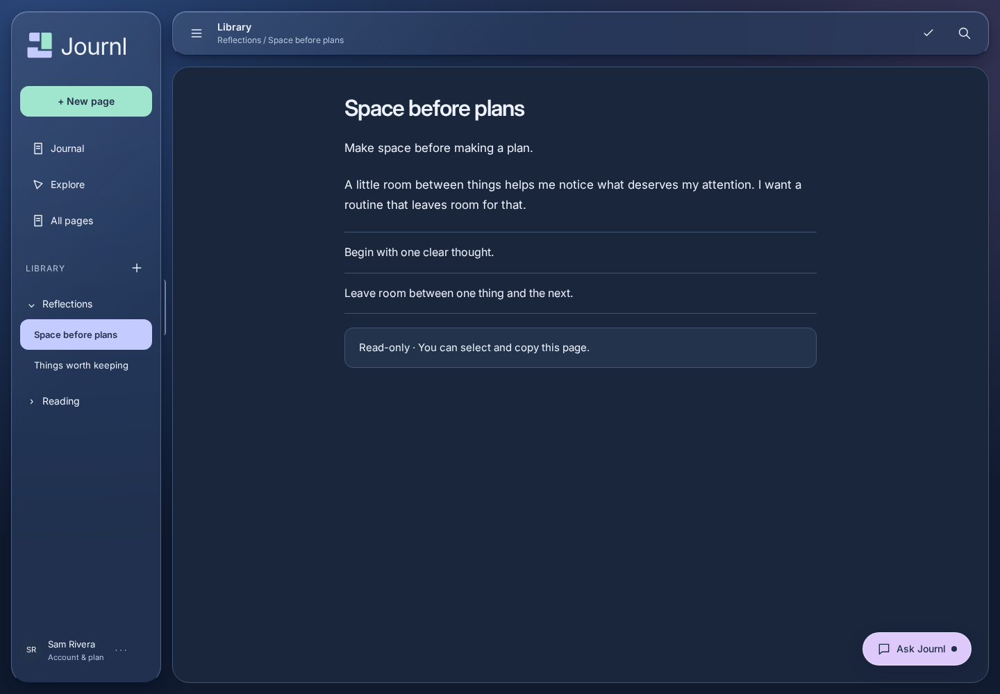
SHA256 cf5f5105b9c7ce8b1facf043bdd19dfbc98477dc244fadd21b016eb3ae8b6afc